Chuteira Imviso Ginka
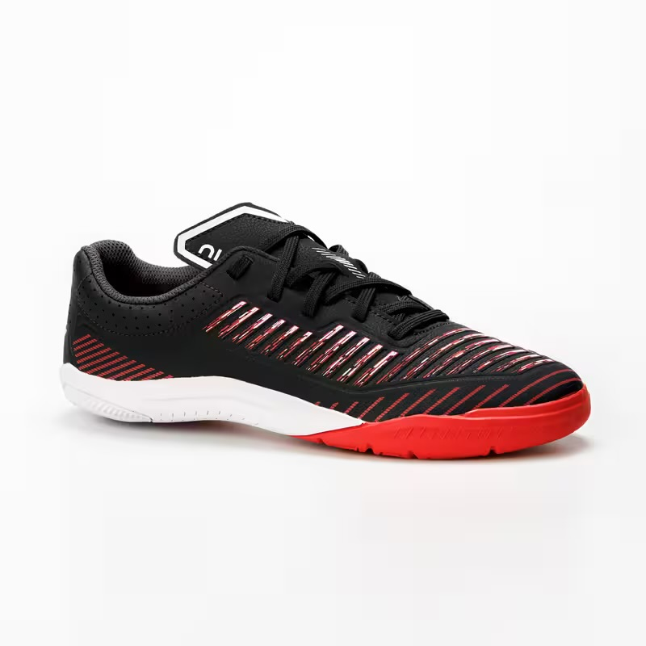A chuteira Imviso, Com cabedal em material sintético, solado em borracha e design inovador, essa chuteira é ideal para jogadores de futebol que querem se destacar no campo.
Chuteira Joma
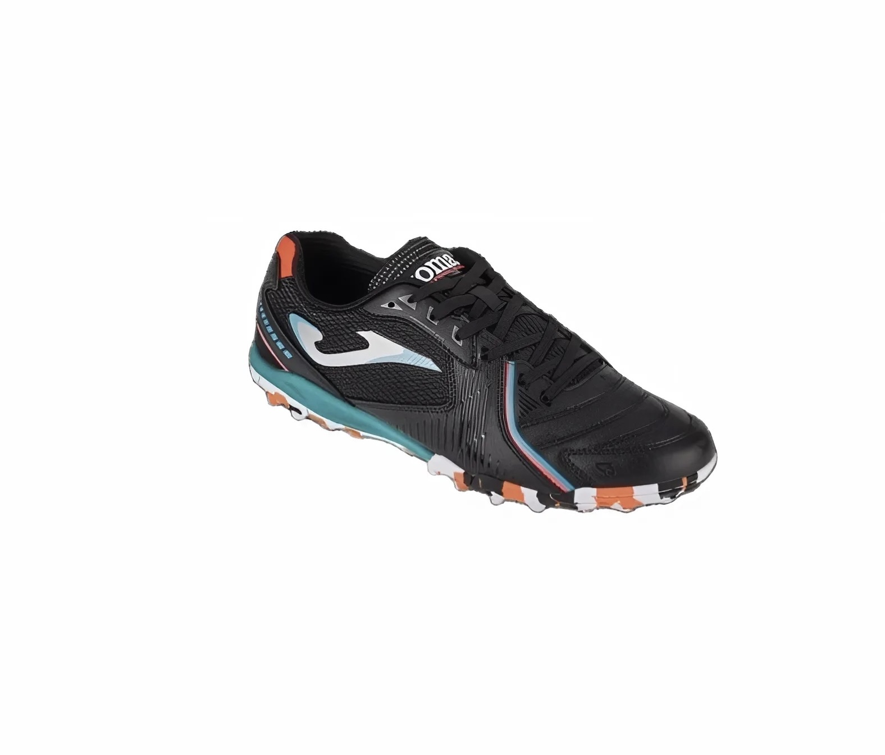A chuteira Joma preta é a escolha certa para quem busca desempenho e estilo nas quadras de futsal e relva sintética. Com cabedal em malha respirável, entressola responsiva e solado de borracha aderente, essa chuteira é perfeita para jogadores de futsal que querem dar o seu melhor.
Chuteira Joma Top flex
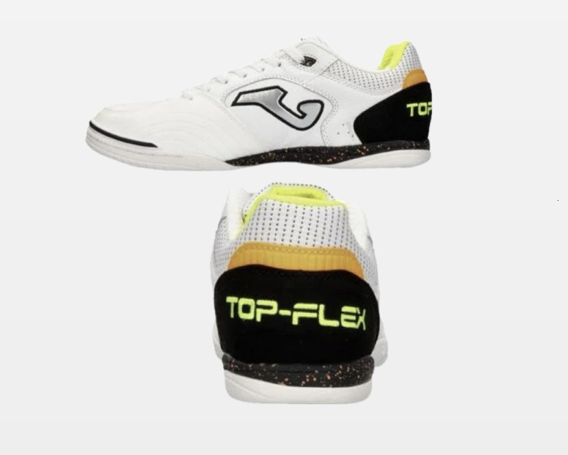A chuteira Joma Top flex branco é a escolha certa para quem busca desempenho e estilo nas quadras de futsal. Com cabedal em malha respirável, entressola responsiva e solado de borracha aderente, essa chuteira é perfeita para jogadores de futsal que querem dar o seu melhor.
Chuteira Kipsta
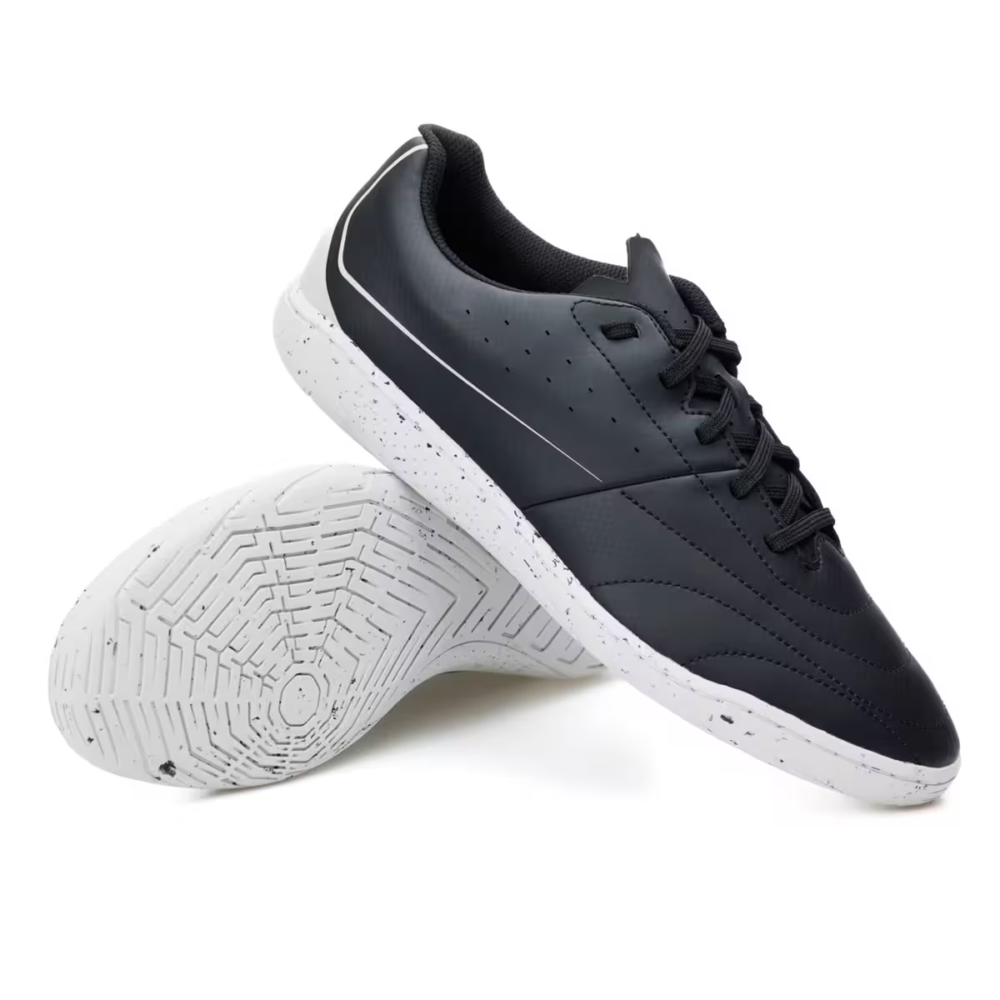A chuteira Kipsta é a escolha certa para quem busca desempenho e estilo nas quadras de futsal. Com cabedal em malha respirável, entressola responsiva e solado de borracha aderente, essa chuteira é perfeita para jogadores de futsal que querem dar o seu melhor.
Chuteira Kipsta
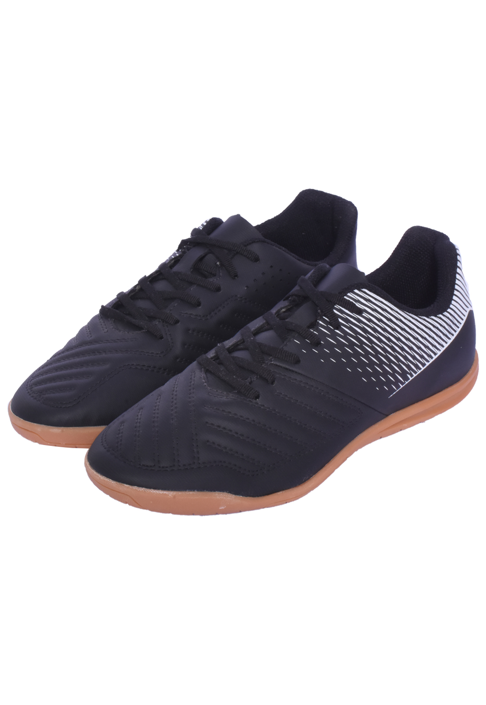A chuteira Kipsta é a escolha certa para quem busca desempenho e estilo nas quadras de futsal. Com cabedal em malha respirável, entressola responsiva e solado de borracha aderente, essa chuteira é perfeita para jogadores de futsal que querem dar o seu melhor.
Chuteira Kipsta/2
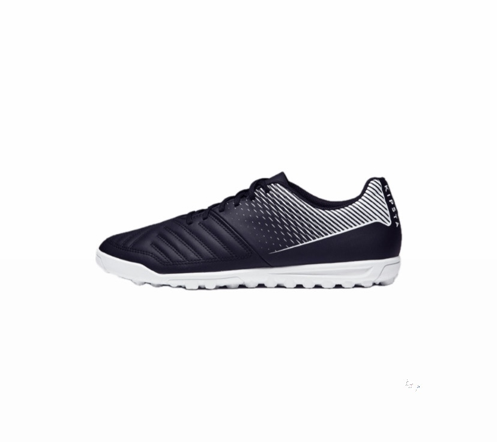A chuteira Kipsta é a escolha certa para quem busca desempenho e estilo nas quadras de futsal. Com cabedal em malha respirável, entressola responsiva e solado de borracha aderente, essa chuteira é perfeita para jogadores de futsal que querem dar o seu melhor.
Chuteira Imviso Ginka
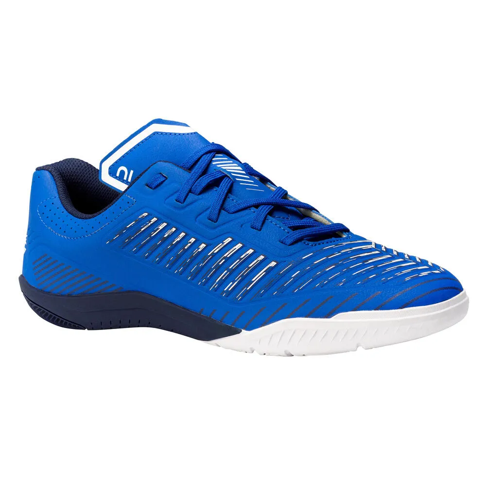A chuteira Imviso, Com cabedal em material sintético, solado em borracha e design inovador, essa chuteira é ideal para jogadores de futebol que querem se destacar no campo.
Chuteira Eskudo
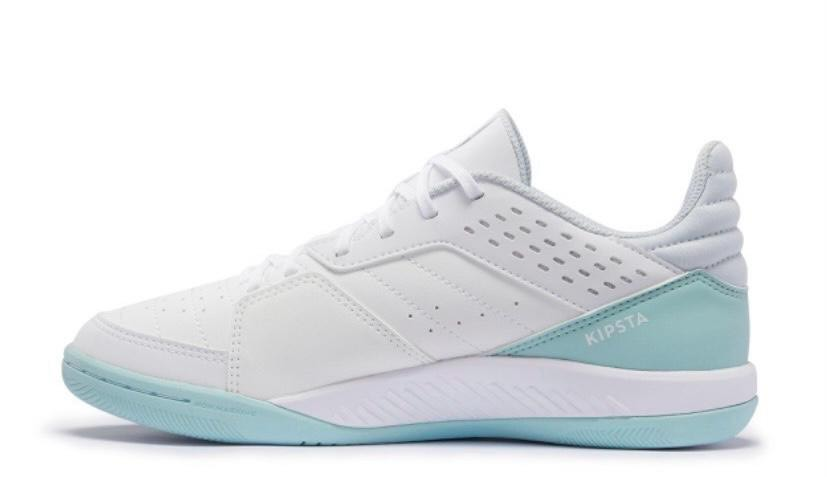A chuteira Eskudo , Com cabedal em material sintético, solado em borracha e design inovador, essa chuteira é ideal para jogadores de futebol que querem se destacar no campo.
Chuteira Eskudo 500
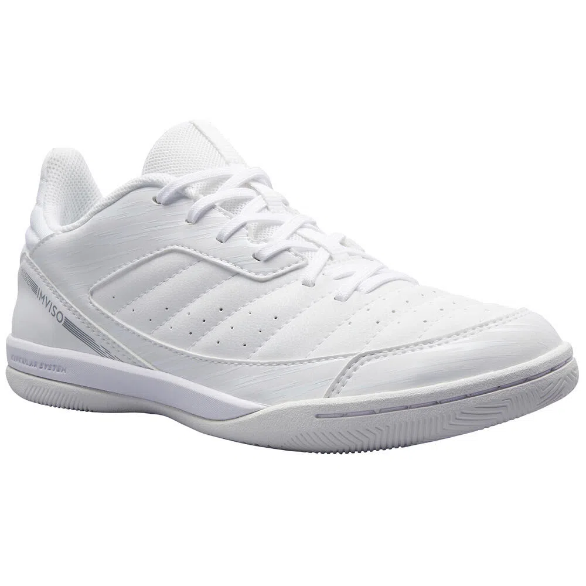A chuteira Eskudo 500, Com cabedal em material sintético, solado em borracha e design inovador, essa chuteira é ideal para jogadores de futebol que querem se destacar no campo.
Chuteira Imviso

A chuteira Imviso, Com cabedal em material sintético, solado em borracha e design inovador, essa chuteira é ideal para jogadores de futebol que querem se destacar no campo.
Chuteira Imviso Branca
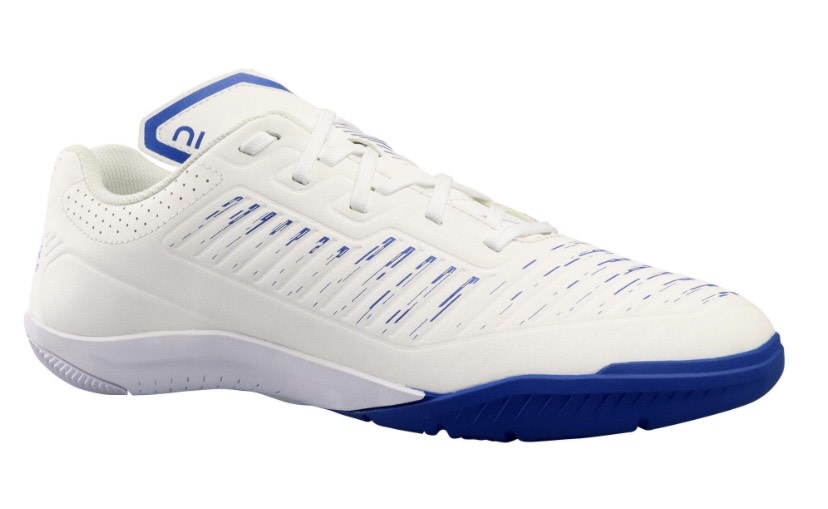A chuteira Imviso, Com cabedal em material sintético, solado em borracha e design inovador, essa chuteira é ideal para jogadores de futebol que querem se destacar no campo.
Chuteira Imviso
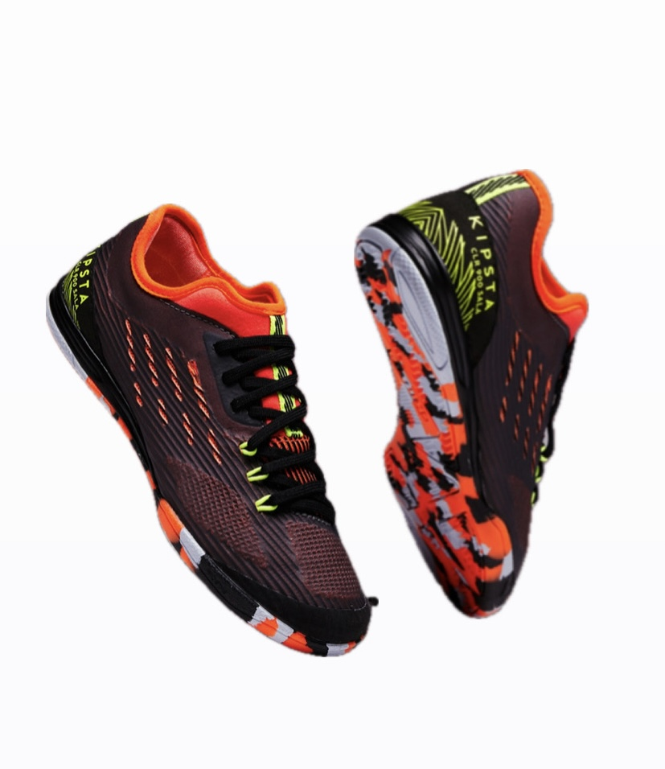A chuteira Imviso, Com cabedal em material sintético, solado em borracha e design inovador, essa chuteira é ideal para jogadores de futebol que querem se destacar no campo.
Chuteira Imviso

A chuteira Imviso Ginka 900 é perfeita para quem busca velocidade e precisão. Com cabedal em material sintético, solado em borracha e design inovador, essa chuteira é ideal para jogadores de futebol que querem se destacar no campo.
Chuteira Imviso azul especial

A chuteira Imviso, Com cabedal em material sintético, solado em borracha e design inovador, essa chuteira é ideal para jogadores de futebol que querem se destacar no campo.
Chuteira Imviso Ginka

A chuteira Imviso Ginka 900 é perfeita para quem busca velocidade e precisão. Com cabedal em material sintético, solado em borracha e design inovador, essa chuteira é ideal para jogadores de futebol que querem se destacar no campo.
Chuteira predator

A chuteira predator é a escolha certa para quem busca desempenho e estilo nas quadras de futsal. Com cabedal em malha respirável, entressola responsiva e solado de borracha aderente, essa chuteira é perfeita para jogadores de futsal que querem dar o seu melhor.
Chuteira Joma Top flex

A chuteira Joma Top flex brancoé a escolha certa para quem busca desempenho e estilo nas quadras de futsal. Com cabedal em malha respirável, entressola responsiva e solado de borracha aderente, essa chuteira é perfeita para jogadores de futsal que querem dar o seu melhor.
Chuteira Imviso Ginka 900 MID

A chuteira Imviso Ginka 900 MID é a escolha certa para quem busca desempenho e estilo nas quadras de futsal. Com cabedal em malha respirável, entressola responsiva e solado de borracha aderente, essa chuteira é perfeita para jogadores de futsal que querem dar o seu melhor.
Chuteira Joma Top flex

A chuteira Joma Top flex brancoé a escolha certa para quem busca desempenho e estilo nas quadras de futsal. Com cabedal em malha respirável, entressola responsiva e solado de borracha aderente, essa chuteira é perfeita para jogadores de futsal que querem dar o seu melhor.
Chuteira Team Quest
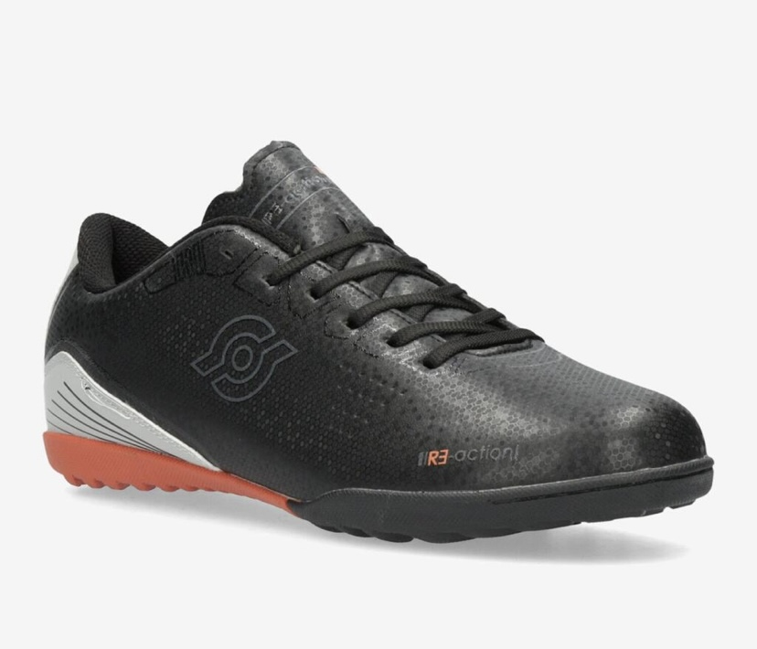A chuteira Team Quest é a escolha certa para quem busca desempenho e estilo nas quadras de futsal. Com cabedal em malha respirável, entressola responsiva e solado de borracha aderente, essa chuteira é perfeita para jogadores de futsal que querem dar o seu melhor.
Chuteira Adidass pure

A chuteira Adidass pure é a escolha certa para quem busca desempenho e estilo nas quadras de futsal. Com cabedal em malha respirável, entressola responsiva e solado de borracha aderente, essa chuteira é perfeita para jogadores de futsal que querem dar o seu melhor.
Chuteira Adidas X Speedportal

A chuteira Adidas X Speedportal é a escolha certa para quem busca desempenho e estilo nas quadras de futsal. Com cabedal em malha respirável, entressola responsiva e solado de borracha aderente, essa chuteira é perfeita para jogadores de futsal que querem dar o seu melhor.
Chuteira Team Quest
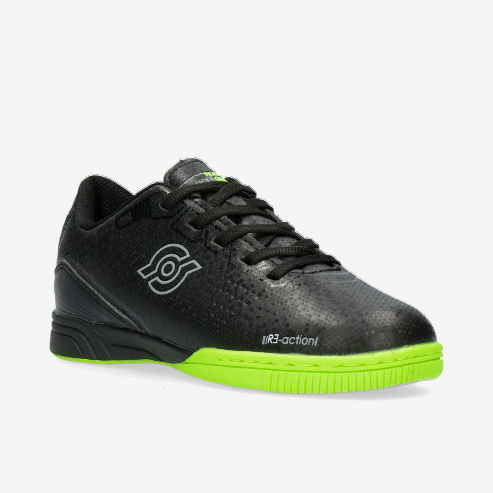A chuteira Team Quest é a escolha certa para quem busca desempenho e estilo nas quadras de futsal. Com cabedal em malha respirável, entressola responsiva e solado de borracha aderente, essa chuteira é perfeita para jogadores de futsal que querem dar o seu melhor.
Chuteira Adidas Sala

Adidas Sala é a escolha certa para quem busca desempenho e estilo nas quadras de futsal. Com cabedal em malha respirável, entressola responsiva e solado de borracha aderente, essa chuteira é perfeita para jogadores de futsal que querem dar o seu melhor.
Chuteira Adidas Sala

Adidas Sala é a escolha certa para quem busca desempenho e estilo nas quadras de futsal. Com cabedal em malha respirável, entressola responsiva e solado de borracha aderente, essa chuteira é perfeita para jogadores de futsal que querem dar o seu melhor.
Chuteira Nike Mercurial Vapor

Nike Mercurial Vapor é a escolha certa para quem busca desempenho e estilo nas quadras de futsal. Com cabedal em malha respirável, entressola responsiva e solado de borracha aderente, essa chuteira é perfeita para jogadores de futsal que querem dar o seu melhor.
Chuteira Ginka Pro

Desenvolvidas para o praticante de futsal que domina todos os gestos técnicos e que procura dinamismo, leveza, flexibilidade e um excelente toque de bola.